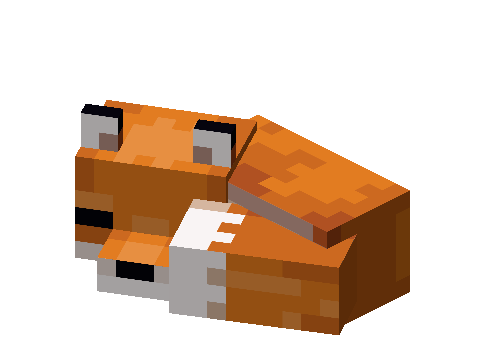
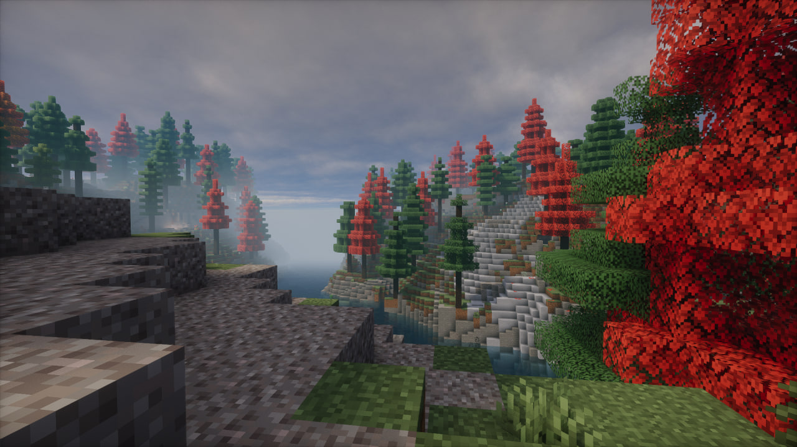
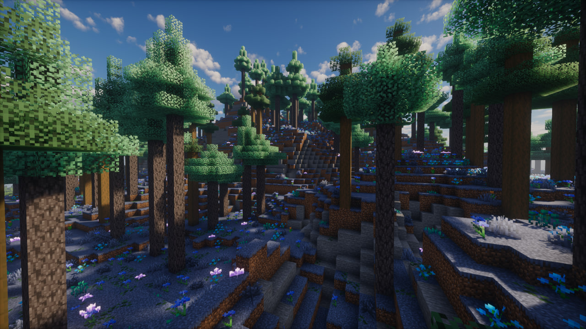
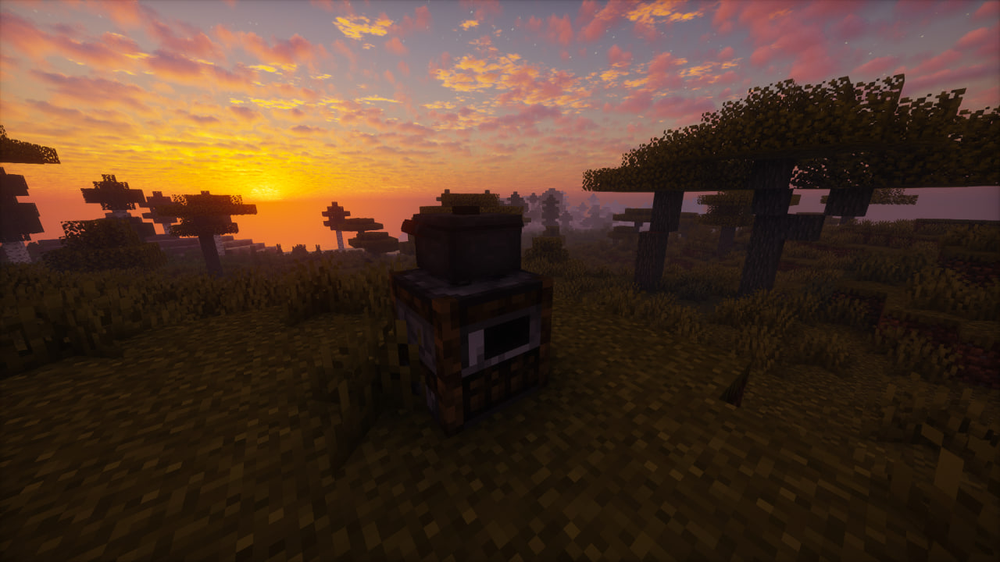
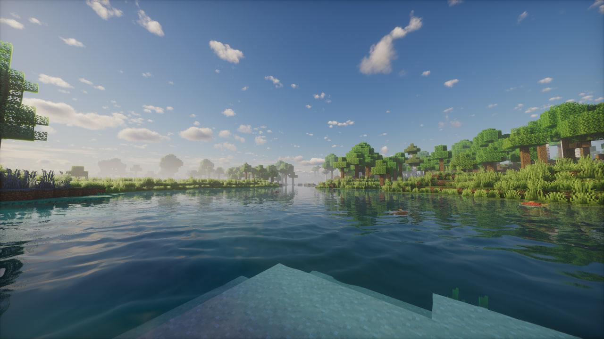

Твой мир.
Твои правила.
Твоя история.
Полуванильный сервер, где привычный Minecraft встречается с уникальными происхождениями, авторскими механиками и настоящими историями игроков.

геймплей
на выбор
создаёте вы
мир ждёт
Больше, чем обычное выживание.
Здесь есть знакомая свобода Minecraft и детали, которые делают каждое приключение особенным.
Выбери свою природу
Каждое происхождение меняет стиль игры. Одни открывают новые возможности, другие требуют привыкнуть к ограничениям.
Изучить происхождения ↗ 02 / МЕХАНИКИНовые детали мира
Авторские механики, небольшие удобства и необычные способы взаимодействия.
Смотреть механику ↗ 03 / СООБЩЕСТВОСвобода с уважением
Строй, исследуй и общайся. Понятные правила помогают сохранять комфортную игру.
Правила сервера ↗Каждый уголок
скрывает открытие.
Исследуй необычные места, находи красивые виды и создавай собственные истории.




Кем ты станешь
в этом мире?
От обычного человека до существа, рождённого в пламени. Найди происхождение, которое подходит твоему стилю игры.
Все происхождения ↗Сообщество
FIREON.
Новости, общение, предложения и помощь по проекту - всё в наших сообществах.
Помоги FIREON гореть ярче.
Поддержка помогает развивать сервер и добавлять новые возможности.